We are AndesRobot Team, a multidisciplinary team of professors and students from Santo Tomas University (Colombia) and Andrés Bello University (Chile), with backgrounds in Electronic Engineering, Automation and Robotics Engineering, Computer Engineering, Civil Engineering, Industrial Engineering and Construction Engineering.
We develop a domestic service robot able to navigate autonomously, recognize objects and people, manipulate everyday objects and interact with users through natural language. In our first official participation, at RoboCup 2025 in Salvador, Brazil, we finished in 11th place.
For RoboCup 2027 the team is organized around research lines in semantic mapping, object perception, mobile manipulation, human-robot interaction, task planning and person tracking, with the goal of producing results that can be measured, published and shared.
Our members have previous experience in national and international competitions such as RoboCup (2014, 2019, 2025), IEEE LARC (2024), AWS Summit (2022) and FLL (2019).
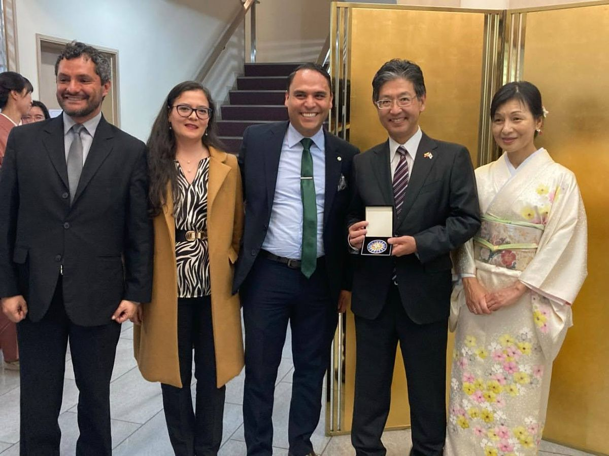
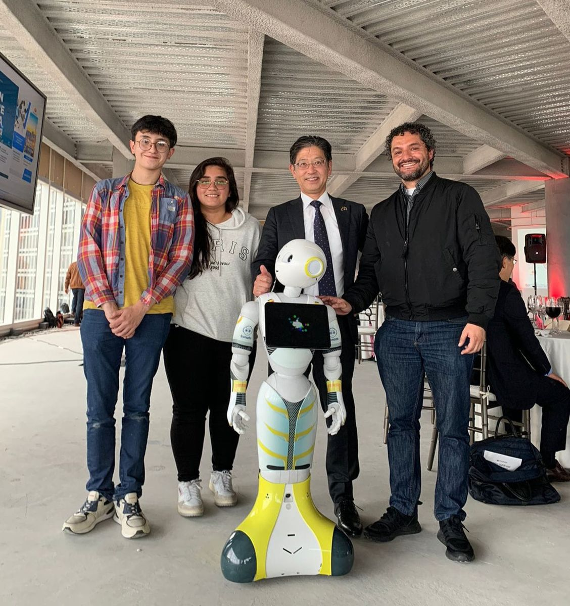
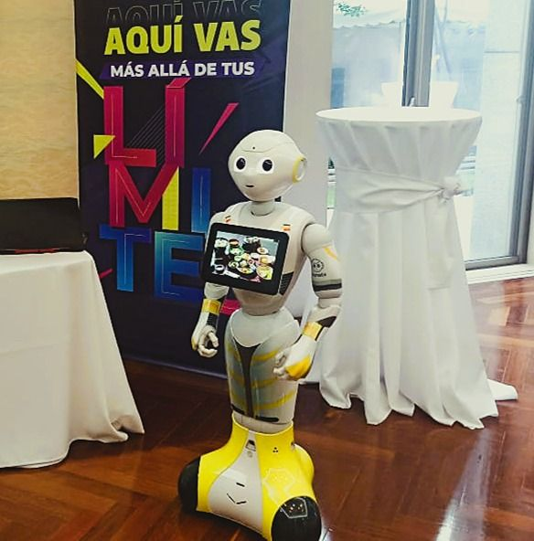
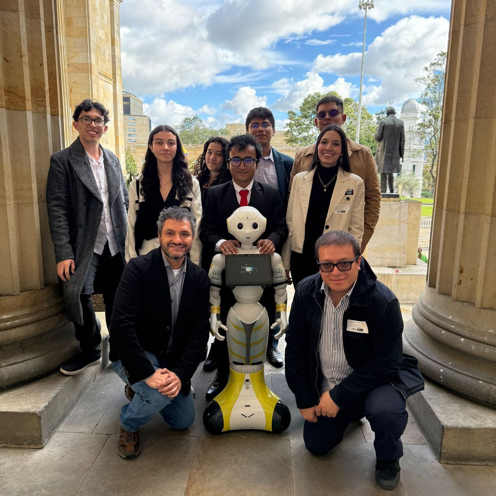
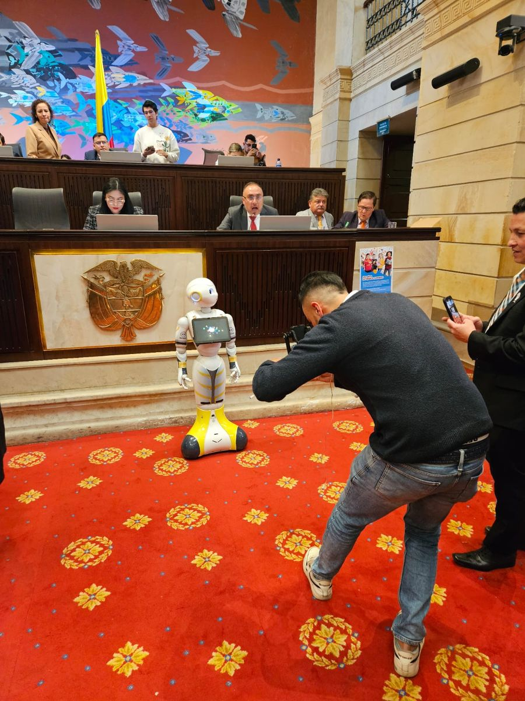
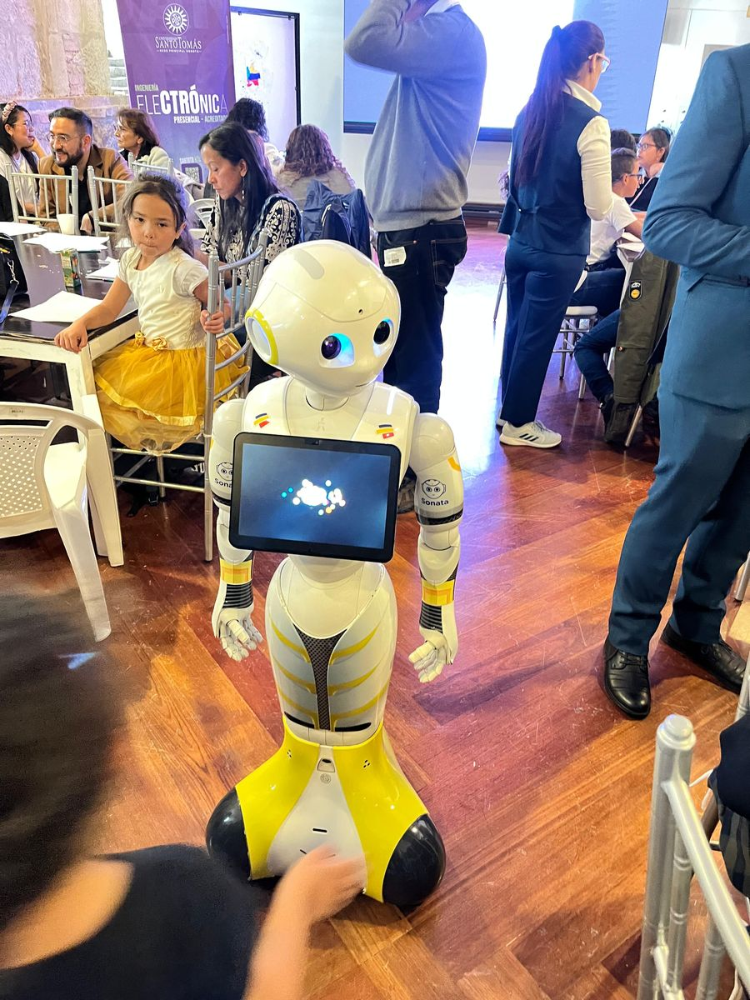
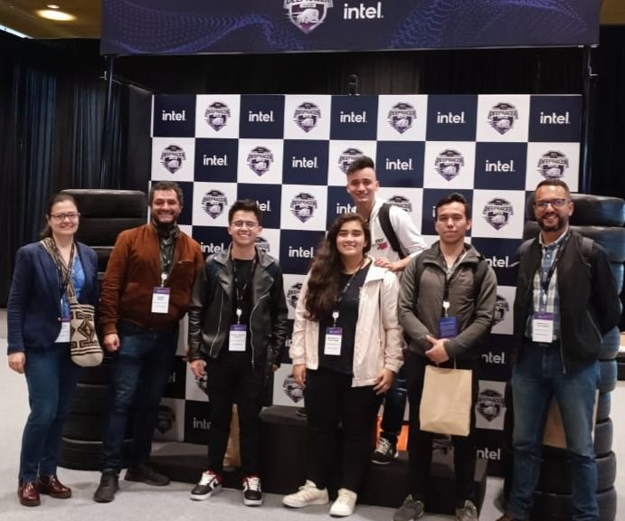
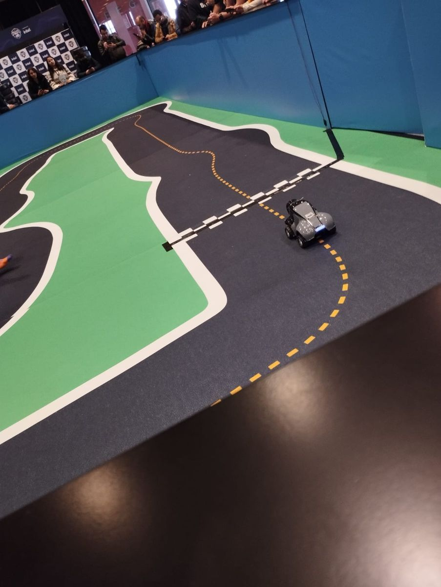
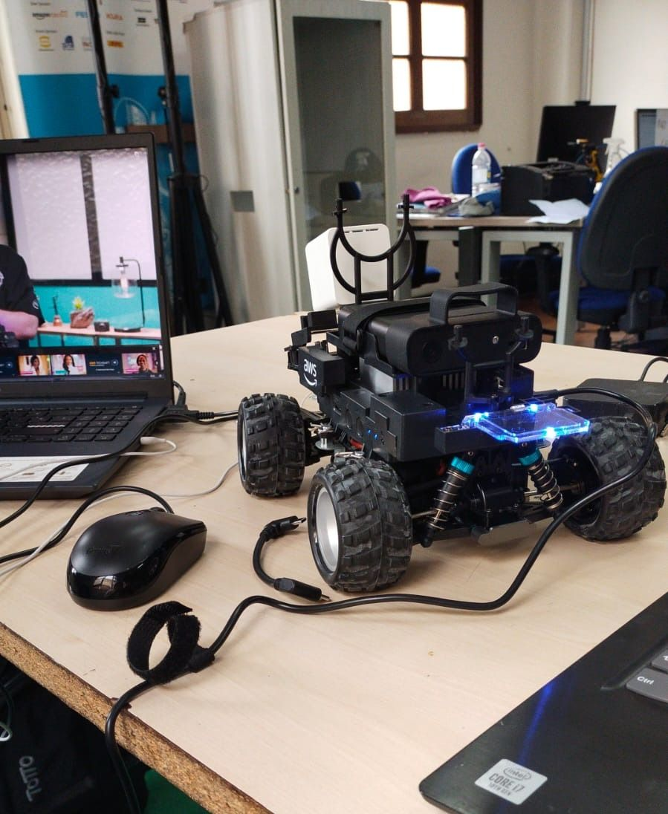
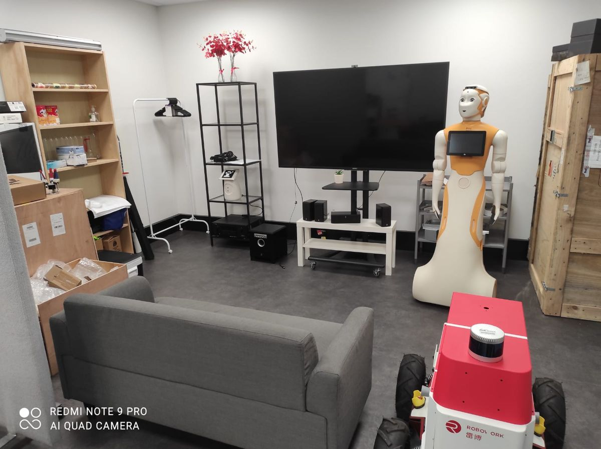
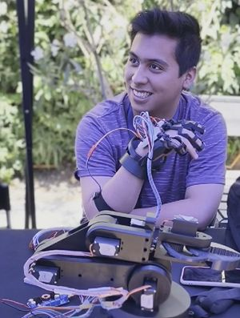
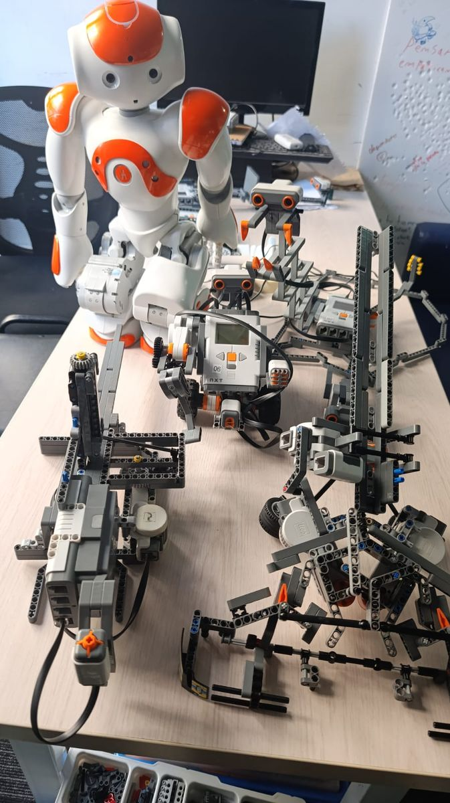
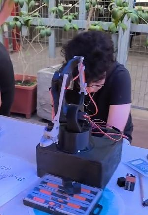
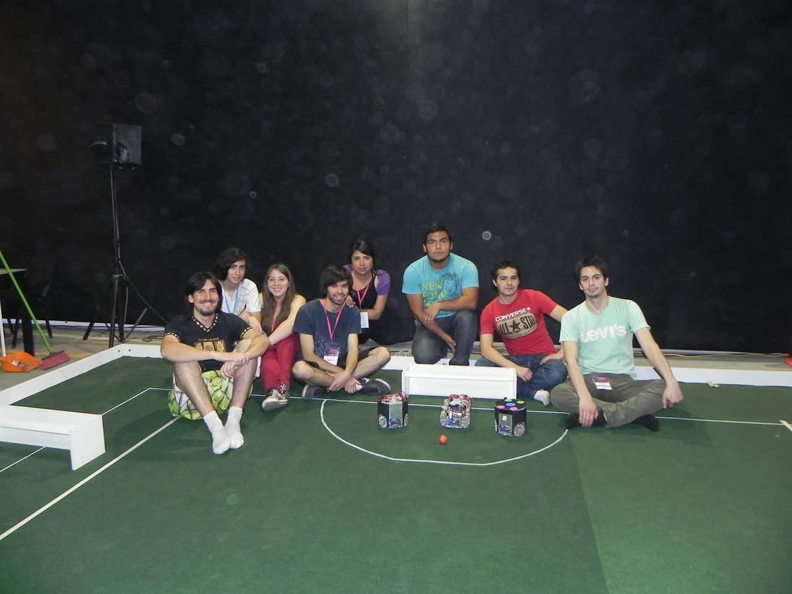
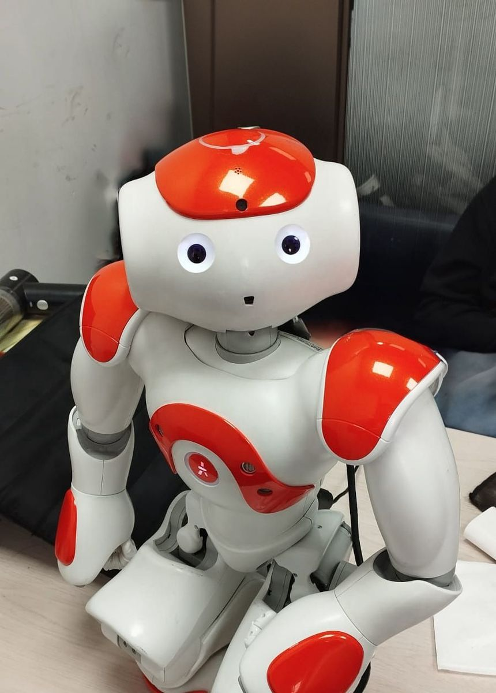
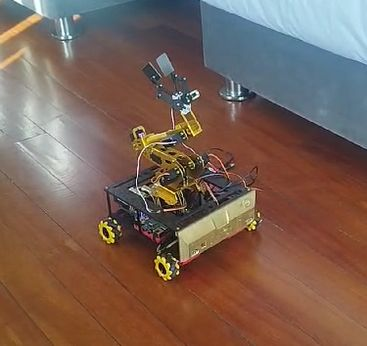
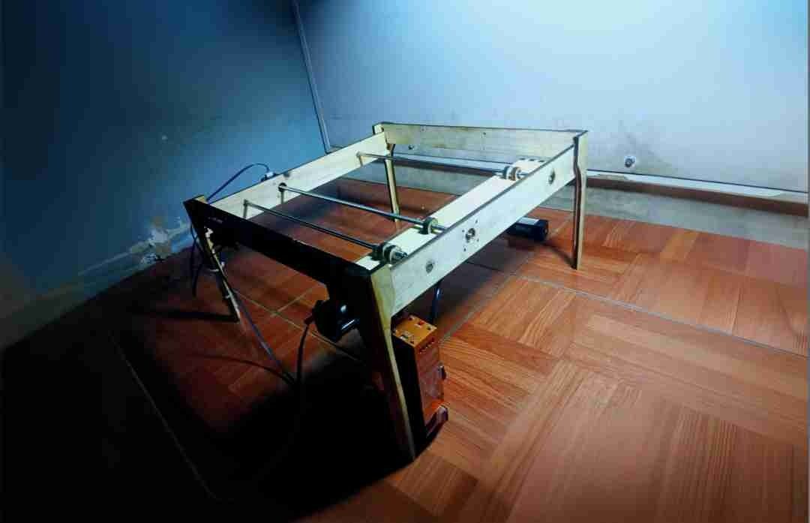

Andrés Bello University (Chile)
Antonio Varas Campus, Santiago

Santo Tomas University (Colombia)
Main Campus, Bogotá D.C.